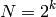
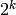
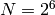
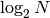
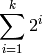
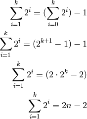

Analysis of Parallel Merge Sort¶
Here is the pseudocode for the Parallel Merge Sort algorithm, as we discussed in class (more or less):
code block
 N do
N do
 s
sWe want to analyze the amount of work done by this algorithm, taking into account when things happen in parallel. We’ll use the input array size, N , as the input size, and we’ll count the comparisons/copies done by the merge process as the basic operation. Because of the binary-tree structure of this algorithm, it makes sense to immediately apply a simplifying assumption, that the input size is a power of two:

The value of s in the algorithm starts at 2, and goes up as a sequence of powers of two, stopping when it goes past  . Thus, the while loop will repeat k times (try this out for  , for example).
Repeating k times also means that the while loop repeats  times, by the relationship between N and k.
Each pass through the while loop, we have a set of merges that happen in parallel. In order to count the work done by merging on a particular pass, we count the cost of one merge of that size.
However, the amount of work done by a merge in the first pass through the while loop is different from the amount of work done in the second pass, and so on. This is true because the size of the data being merged changes from one pass to another. Therefore we aren’t going to try to figure out a fixed amount of work within the while loop, and then multiple by k, the number of times the while loop runs. That would overstate the work done. Instead, look at the amount of work per pass.
The first pass is always merging two values. We can call the work done there 2, as we have to copy both values to a new array and back again. On the second pass, each merge works on four data values: work done is therefore 4. The size of the data being merged doubles each time, and is a sequence of powers of two. Since the amount of work done by the merge is (roughly) equivalent to the size of the data, the work done starts at 2 and goes up as powers of two each pass.
So we can characterize the overall work done by the algorithm by the following summation. The bounds of the summation reflect the number of times the while loop runs, and the body of the summation reflects the work done for one merge for that pass:

We can solve this summation as follows:

This shows that the overall work done by Parallel Merge Sort is